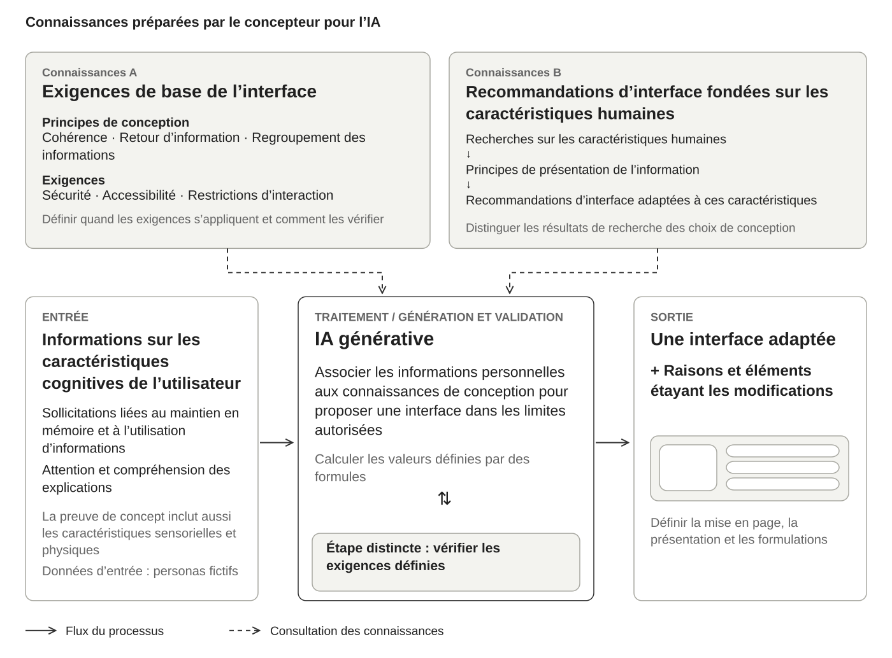
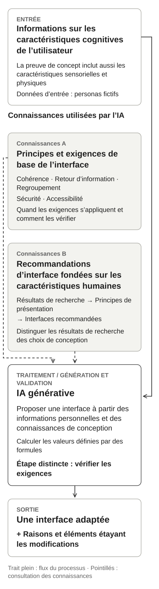
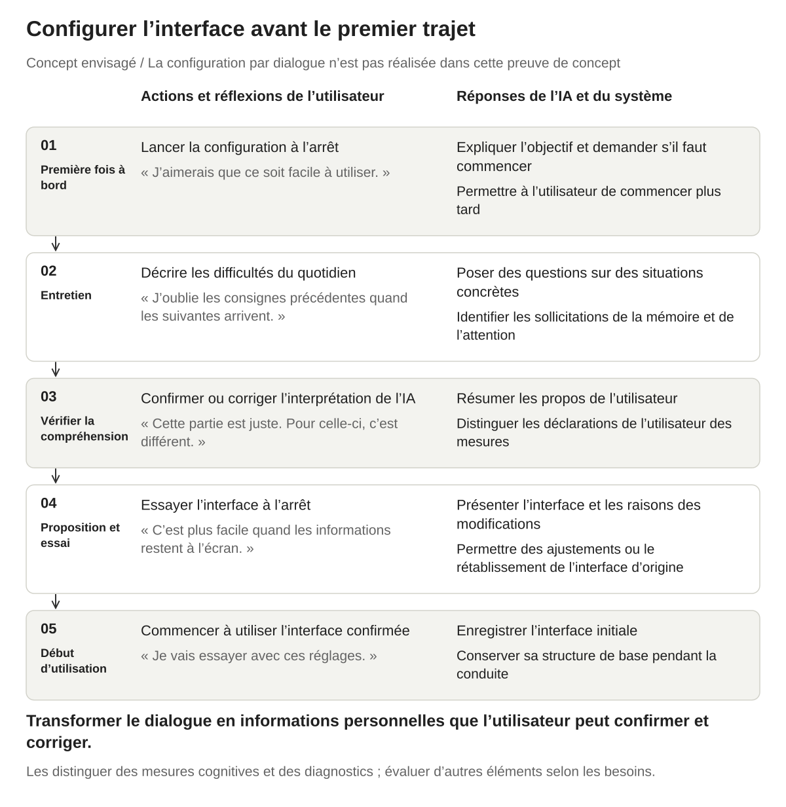
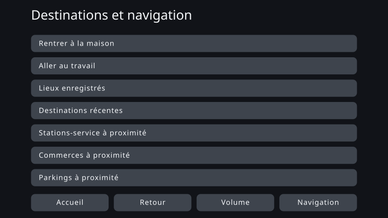
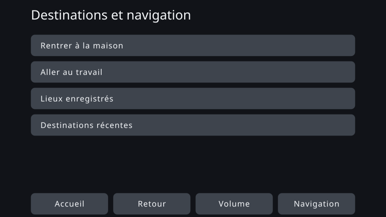
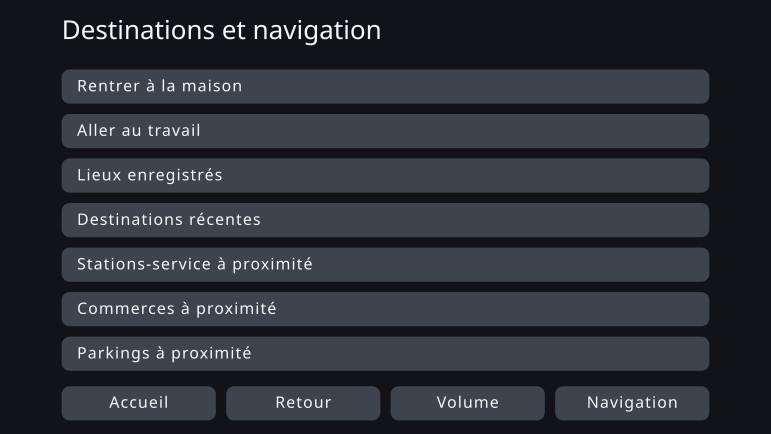

Personnaliser les interfaces par la conception sous contraintes
Août 2026
Vue d’ensemble
Ce projet propose un système qui reçoit des informations sur les caractéristiques cognitives utiles à l’utilisation d’une interface et génère une interface adaptée à la personne. Il combine des principes de conception d’interfaces, des exigences de sécurité et d’accessibilité et des recherches sur les caractéristiques humaines.
Dans l’approche que j’appelle « conception sous contraintes », les personnes définissent les exigences et leurs conditions d’application ; l’IA générative élabore ensuite des propositions concrètes dans ce cadre. En prenant la navigation automobile comme cas d’étude, j’ai réalisé une preuve de concept qui génère des interfaces pour treize personas fictifs — incluant des caractéristiques sensorielles et physiques — et vérifie leur conformité aux exigences dans une étape distincte.
La comparaison a révélé une modification nette de la disposition de l’écran en réponse à une caractéristique physique, tandis que la plupart des résultats changeaient peu visuellement. L’utilisabilité et la sécurité n’ont pas été évaluées auprès d’utilisateurs. Ce travail a permis de repérer les décisions pouvant être confiées à l’IA générative et les exigences qui réduisaient les possibilités de personnalisation.
Contexte : combien de besoins différents une seule interface peut-elle satisfaire ?
La plupart des produits proposent une interface commune conçue pour le plus grand nombre. Pourtant, la quantité d’informations que l’on peut traiter à la fois, la facilité à diriger son attention, à comprendre une formulation ou à manipuler de petites commandes varient d’une personne à l’autre. Une interface prévue pour de nombreux utilisateurs peut donc rester mal adaptée à une personne donnée.
L’évaluation au niveau du groupe a elle aussi ses limites. Les lignes directrices facultatives publiées par la NHTSA en 2013 exigent qu’au moins 21 participants sur 24 satisfassent à chacun des critères d’acceptation relatifs aux regards. Cela ne signifie pas que tous puissent utiliser l’interface aussi facilement. [1]
Même dans les produits où la taille du texte ou la quantité affichée sont modifiables, il faut que la personne remarque l’existence du réglage, le relie à sa propre difficulté et choisisse l’ajustement adéquat. Ces réglages resteraient-ils sous-utilisés, laissant les gens avec une interface qui ne leur convient pas ? C’est de cette question que tout est parti.
Dans un système de navigation, regarder l’écran et le manipuler entrent en concurrence avec l’attention qu’exige la conduite. [1] Si une interface mal ajustée peut alourdir cette charge, alors il est utile d’étudier si une interface adaptée dès le départ pourrait améliorer à la fois l’utilisabilité et la sécurité.
L’IA générative m’a permis de prototyper un processus qui transforme des informations personnelles et des connaissances de conception en une interface. J’ai exploré la possibilité de réduire ainsi le travail nécessaire pour concevoir manuellement une interface distincte pour chaque personne.
Le taux d’utilisation réel de ces réglages, et l’effet d’une interface mal ajustée sur les accidents, n’ont pas été examinés dans ce projet.
Proposition — relier les informations personnelles à deux sortes de connaissances de conception
Le système reçoit des informations sur les caractéristiques cognitives utiles à l’utilisation d’une interface. Cette preuve de concept utilisait des personas fictifs comprenant aussi des caractéristiques sensorielles et physiques. L’IA examine ces informations à la lumière de deux ensembles de connaissances préparés à l’avance : les règles de base de conception d’interfaces et les liens entre les caractéristiques humaines et les interfaces recommandées.
L’IA génère une interface dans les limites autorisées ; une étape distincte vérifie ensuite sa conformité aux exigences. Le résultat comprend l’interface personnalisée et une explication des changements et de leurs raisons.


Entrée : les informations sur la personne
Par exemple : la facilité à retenir et manipuler plusieurs informations à la fois, la sensibilité aux stimuli qui détournent l’attention, le type d’explication le plus facile à suivre. La mise en œuvre a également couvert la vision et la motricité fine des doigts. L’interface n’est pas déterminée à partir du seul diagnostic ; elle s’appuie sur les informations personnelles pertinentes pour son utilisation.
Connaissances A : les exigences de base d’une interface
On rassemble les principes fondamentaux de conception : cohérence, retour d’information sur les actions, regroupement de l’information, lisibilité du texte et des cibles tactiles. S’y ajoutent les restrictions d’usage propres aux interfaces embarquées et les exigences d’accessibilité, définies avec les situations où elles s’appliquent.
Connaissances B : relier les caractéristiques humaines aux interfaces recommandées
Cet ensemble relie les recherches sur les caractéristiques humaines aux principes de présentation de l’information, puis à la conception d’interfaces. Par exemple, une difficulté à garder une information en mémoire pendant une tâche suggère de réduire la charge de mémorisation, ce qui peut conduire à maintenir les informations nécessaires à l’écran.
La recherche sur une caractéristique ne fournit pourtant pas telle quelle une valeur de conception pour un système de navigation. Ce que la recherche établit est distingué des décisions de conception que ce projet en a tirées. Les améliorations qui profitent également à tout le monde relèvent des règles de base et ne comptent pas comme un résultat de l’individualisation.
Expérience envisagée : trouver une interface adaptée avant le premier trajet
Projection. La configuration initiale par la conversation n’est pas implémentée dans cette preuve de concept.
Imaginez-vous pour la première fois au volant d’une nouvelle voiture. Alors que le véhicule est à l’arrêt, un agent d’IA vous interroge sur vos expériences habituelles avec les interfaces. Au lieu de parcourir des réglages techniques, on raconte ce qui pose habituellement problème et ce que l’on trouve facile à utiliser.

-
Avant le premier trajet : engager la conversation
IA« Pour adapter l’écran à votre usage, pourriez-vous me dire quelques mots sur votre façon de vous en servir ? Nous pouvons aussi le faire plus tard. »
La personne comprend l’objectif et choisit de commencer maintenant ou plus tard.
-
Entretien : parler de ses difficultés
IA« Quand les indications s’enchaînent, à quels moments cela devient-il difficile à suivre ? »
Utilisateur« Quand l’indication suivante arrive, il m’arrive d’oublier ce qui venait d’être dit. »
L’IA interroge sur des situations concrètes et met en ordre les difficultés qui touchent à la rétention de l’information et à l’orientation de l’attention.
-
Vérifier la compréhension : permettre à la personne de corriger l’IA
IA« Il vous conviendrait donc mieux que les informations nécessaires restent à l’écran, plutôt que d’avoir à retenir les étapes — est-ce bien cela ? »
La personne confirme ou corrige cette lecture. Ce qu’elle déclare en conversation reste distinct des mesures de fonctions cognitives et des diagnostics ; là où une mesure est nécessaire, un autre moyen de l’établir est prévu.
-
Proposition et essai : expliquer les changements et essayer l’interface
IA« Pour alléger ce que vous devez garder en tête, je propose un écran où l’action en cours et l’étape suivante sont visibles ensemble. »
À l’arrêt, la personne essaie par exemple le choix d’une destination. Elle peut dire « c’était plus clair avant » ou « ici, je changerais les mots », et la proposition peut être ajustée, ou l’interface d’origine rétablie.
-
Début de l’usage : se servir de l’interface validée
L’interface validée par la personne est enregistrée comme état initial. En roulant, la structure de base qu’elle a apprise reste inchangée. Si elle souhaite y revenir, elle peut réajuster à l’arrêt.
Le but de la conversation n’est pas de classer l’utilisateur une fois pour toutes. Il est de préparer l’état de départ, par un échange où la personne peut s’expliquer et corriger ce qui a été compris.
Mise en œuvre — distinguer les exigences fixes des décisions confiées à l’IA
J’ai réalisé la chaîne allant de la réception des caractéristiques d’une personne à la génération, à la vérification, au rendu et à la comparaison des interfaces. À la place d’un entretien, j’ai utilisé comme entrées 13 personas fictifs présentant des caractéristiques différentes.
La navigation automobile a été choisie comme sujet parce qu’elle permet de traiter concrètement des conditions : surface de l’écran, taille des cibles tactiles, quantité d’information affichable, et ce qui peut être manipulé en roulant.
La conception sous contraintes comme démarche
La conception sous contraintes, au sens de ce projet, est une méthode dans laquelle les personnes définissent les exigences et leurs conditions d’application, puis l’IA propose des solutions dans ce cadre.
Une variation paramétrique fondée sur des règles fixe à l’avance la valeur ou l’option qui correspond à chaque entrée. Ici, j’ai défini les plages de valeurs autorisées et les éléments probants à l’appui de chaque décision, en laissant l’IA générative choisir les valeurs et les formulations qui n’étaient pas déjà fixées. La mise en œuvre combine ce qui est décidé par calcul et ce qui est décidé par l’IA.
| Ce que les preuves établissent | Traitement dans l’implémentation |
|---|---|
| Une valeur précise ou une relation mathématique est établie | Calculer une valeur dans les conditions et le domaine d’application vérifiés |
| La direction de l’ajustement est connue, mais pas son ampleur | Choisir une valeur compatible avec cette orientation et les contraintes, puis la consigner comme une décision de conception non évaluée |
| Les preuves seules ne déterminent pas un choix valable | Traiter le résultat comme une proposition exploratoire à évaluer |
Chaque fois qu’un résultat de recherche a été traduit dans l’interface, la source, les conditions d’application et la décision de conception ont été consignées. L’interface générée est accompagnée d’une explication des changements, ce qui permet de retracer les raisons pour lesquelles cette conception a été proposée à cette personne.
Vérifier l’interface générée dans une étape distincte
L’interface est générée sous forme de données structurées décrivant ses éléments et leur disposition, puis affichée à partir de ces données. Du code vérifie les exigences numériques et structurelles. Une vérification distincte par un grand modèle de langage (LLM) évalue certaines exigences nécessitant une interprétation du sens. Le système consigne aussi les points hors du champ des vérifications automatiques et ceux que le manque d’informations empêche de vérifier.
Ces vérifications établissent si le résultat respecte les exigences définies. Savoir si l’interface est réellement plus facile à utiliser, ou plus sûre, demande une évaluation par les utilisateurs.
Si des exigences contradictoires sont repérées pendant la conception, l’IA les signale et une personne décide comment les réviser. L’IA ne modifie pas les exigences de sa propre initiative à chaque génération d’interface.
Comparaison des interfaces — un cas très modifié, un cas presque inchangé
La référence de comparaison est l’interface construite sur des valeurs par défaut communes, sans entrée de caractéristiques personnelles. À jeu de fonctions identique, on lui a comparé la sortie obtenue lorsque les caractéristiques personnelles étaient fournies.
Les images ci-dessous sont des sorties du prototype, non un système de navigation du commerce avant et après refonte. Les personas ne reproduisent pas non plus des utilisateurs réels ; ce sont des entrées fictives servant à vérifier l’effet d’une caractéristique.
Un cas où les cibles tactiles ont grandi
PS-12 — un persona dont une caractéristique physique rend difficiles les gestes tactiles fins
L’âge et les caractéristiques cognitives et sensorielles sont ceux de la référence PS-01 ; seule la motricité fine des doigts change. Sur les images présentées, chaque cible tactile a grandi et les éléments alignés au centre de l’écran passent de sept à quatre. Les boutons fixes du bas ne sont pas comptés dans ce total.
Interface par défaut commune


Interface générée à partir des caractéristiques personnelles


Agrandir les cibles tactiles a un coût : moins d’éléments peuvent être choisis d’un coup sur le même écran. Le jeu de fonctions est censé être préservé, mais cet écran seul ne permet pas d’évaluer la facilité d’accès aux écrans suivants.
Un cas où la composition n’a presque pas changé
PS-01 — le persona défini comme référence
La taille du texte présente de légères différences, mais le nombre d’éléments, la disposition et la taille des zones tactiles sont pratiquement identiques. Avec cette combinaison de règles et d’entrées, rien n’est ressorti qui modifie fortement la composition par rapport à l’interface par défaut commune.

Interface générée à partir des caractéristiques personnelles


Résultats et discussion : quelle liberté restait-il à la génération ?
La valeur ajoutée de l’IA générative reste à démontrer
Dans ma comparaison visuelle, PS-12 était le seul résultat dont la disposition de l’écran changeait nettement. Les autres présentaient des différences de formulation et de réglages, mais leur apparence ne révélait pas de différence de valeur substantielle.
La modification de PS-12 elle-même restait à la portée de réglages d’affichage et de quantité d’information. L’expérience d’un état initial déjà ajusté, sans avoir à chercher soi-même les réglages, a du potentiel. Mais la valeur de cette expérience et la nécessité de l’IA générative pour produire l’interface sont deux choses à établir séparément.
Cette preuve de concept ne montre ni que l’ajustement aux caractéristiques cognitives améliore la performance d’usage, ni que l’IA générative a produit une meilleure interface qu’une approche par règles.
L’espace de conception construit ici était étroit
Une fois appliquées les tailles minimales du texte et des cibles tactiles, la surface disponible à l’écran et les limites de quantité d’informations affichées, il restait peu de possibilités de disposition. Dans la mise en œuvre, beaucoup était en outre fixé par calcul ou par des structures figées, laissant peu de place à l’IA pour choisir entre plusieurs propositions valables.
Le vocabulaire gardait une liberté, mais ces différences se voient moins qu’un changement de composition, et l’évaluation visuelle employée ici n’a pas permis d’en saisir pleinement la valeur. Pour établir l’apport de l’IA générative, j’en conclus qu’il faut un éventail de propositions possibles dont les différences aient un sens pour l’expérience de l’utilisateur.
Ce constat concerne les règles que j’ai réunies, les paramètres d’interface retenus et l’éventail de conceptions pris en charge par cette réalisation. Il n’établit pas une limite générale des systèmes de navigation automobile ni des interfaces personnalisées.
Par ailleurs, je n’ai pas consulté directement le texte intégral de toutes les normes concernées, JIS, ISO et autres. Les connaissances de conception ont été constituées à partir du matériel accessible : articles, recommandations officielles, données publiques, ainsi que le texte ou l’aperçu de certaines normes. L’étendue de ce que j’ai consulté a pu influer sur les options de conception disponibles. Reste à établir si un examen attentif du texte des normes élargirait cette liberté ou la restreindrait davantage par des conditions supplémentaires.
Travailler avec l’IA a amélioré les règles elles-mêmes
Un autre résultat tient au processus de définition des exigences de génération et à la manière de les rendre vérifiables.
| Problème trouvé | Réponse apportée dans la conception |
|---|---|
| Un même élément portait plusieurs bornes inférieures, dont la combinaison était floue | Préciser comment les bornes s’appliquent conjointement afin de respecter toutes les limites inférieures. |
| Une condition ne valant qu’en roulant s’appliquait aussi à l’arrêt | L’état de conduite dans lequel s’applique chaque condition a été explicité |
| La complexité des formulations et la présence d’icônes étaient réunies dans une même dimension de conception | Elles ont été séparées en axes de conception indépendants, ce qui a rétabli les options éliminées sans raison |
| L’IA fondait ses décisions sur des conditions ne s’appliquant pas à la sortie considérée | Les conditions à consulter ont été explicitées pour chaque sortie |
| Des décisions qui devaient être confiées à l’IA avaient été fixées dans l’implémentation | La répartition des rôles entre spécification et implémentation a été revue |
L’IA repérait les problèmes, je les évaluais, puis les décisions étaient intégrées à la conception. Ce processus itératif a précisé quelles exigences devaient s’appliquer à tous et quels aspects d’une interface pouvaient être personnalisés.
Suite — établir la valeur de l’expérience et celle de l’IA générative
L’étape suivante consiste à examiner séparément deux questions.
La première : quelle valeur y a-t-il dans une expérience où l’interface de départ est déjà ajustée sans que l’on ait à la régler soi-même ? Cela suppose d’implémenter l’entretien, la correction de ce qui a été compris et l’essai, puis d’établir la fiabilité des informations recueillies et la charge pour l’utilisateur.
La seconde : pour quels objets de conception les différences entre propositions issues de l’IA générative se traduisent-elles par une meilleure expérience ? Je voudrais explorer des contextes de conception dans lesquels les exigences laissent plusieurs possibilités valables pour organiser l’information et le déroulement des interactions.
Une évaluation par des utilisateurs réels comparerait, sur la même tâche, l’interface par défaut commune, une interface ajustée par règles à partir d’informations personnelles, et une interface élaborée par l’IA générative. Temps de réalisation, erreurs, regards et charge subjective permettraient de distinguer l’effet de l’ajustement à la personne de l’effet du recours à l’IA générative.
L’examen des normes concernées se poursuivra également, pour mettre à jour la frontière entre ce que la recherche établit et ce qui relève de la décision de conception. Tout en rendant les exigences vérifiables, le prochain défi consiste à préserver, dans ce cadre, des options dont les différences comptent pour les utilisateurs.
Références
- NHTSA, Visual-Manual NHTSA Driver Distraction Guidelines for In-Vehicle Electronic Devices (publié en 2013). Lignes directrices facultatives. Pour les critères d’acceptation portant sur les regards, voir VI.E ; pour l’exposé sur le détournement de l’attention et le risque, voir notamment I.C du texte principal. Cela ne signifie pas que cette preuve de concept ait été certifiée conforme à cet essai. Le document au Federal Register